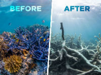
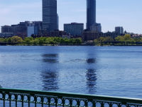

My name is Kermalyn Prospere, but everyone calls me Kerma. I am majoring in Computer Science at the University Of Rhode Island . After graduating, I would like to attend graduate school. My ideal career path would be one with an emphasis on Data Science. A job in the development of connected cars with lower pollution emissions would be ideal . Initially, I am very quiet and reserved with new individuals, but friendly and funny once you get to know me.
 Apart from Computer Science, I am interested in Green energy. Reducing carbon emissions is vital for the survival of our planet. All sectors have a part to play in the reduction of harmful pollutants. Through use of new technological methods, the efficiency of producing products in the manufacturing industry has increased, but even more can be accomplished.
 I also like taking pictures of landscpes with my phone camera. My favorite pictures are those of lakes or other water bodies.